Guía rápida de uso
Resumen operativo organizado por pantalla. Cada módulo incluye acceso y acciones principales en su sitio.
VERSIÓN 10.51. Inicio y navegación
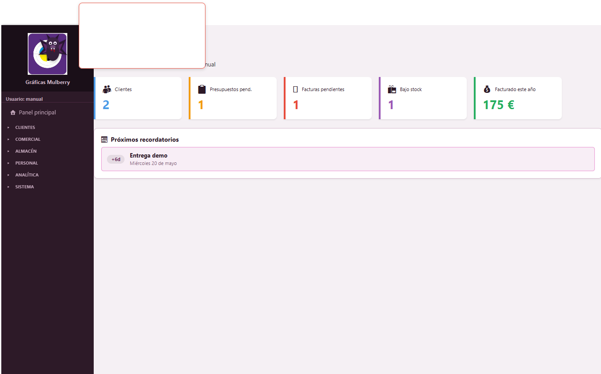
Abrir y moverse
- Abre la aplicación desde Windows.
- Usa el menú lateral para entrar en cada módulo.
- Haz clic en un módulo para abrirlo en el área principal.
- Usa ventana aparte si necesitas comparar dos módulos.
Regla básica de tablas
- Busca el registro.
- Selecciona la fila.
- Después usa Nuevo, Editar, Borrar, Importar, Exportar, PDF o Columnas según corresponda.
Tu base de datos vive en %LOCALAPPDATA%\GraficasMulberry\graficas_mulberry.db. Haz copias frecuentes con Exportar / Backup en formato .db.
2. El flujo comercial completo
El ciclo típico de un trabajo en Gráficas Mulberry recorre cinco pasos. Cada cuadro corresponde a un módulo del menú lateral.
| De presupuesto a factura | Selecciona el presupuesto, cámbialo a aceptado, pulsa 🧾 Crear Factura. La factura hereda cliente, líneas y materiales. El presupuesto pasa a facturado. |
| De factura a albarán | Selecciona la factura, pulsa 📋 Crear Albarán. Se genera con referencia a la factura. Cuando el cliente firme, usa ✅ Marcar firmado. |
| Cobrar el trabajo | Abre el pedido asociado (o créalo) y registra los pagos en su pestaña Control de pagos. Confirma cada cobro con su fecha real. |
| Cerrar la factura | Cuando todo está cobrado, en Facturas pulsa ✅ Marcar pagada. |
3. Estados de los documentos
Cada documento avanza por estados. La columna Estado de la tabla está coloreada por tipo: gris para borrador/pendiente, azul para enviado/proceso, verde para aceptado/firmado/pagado, rojo para rechazado/vencido y morado para facturado.
Presupuestos
Facturas
Albaranes
Pedidos
4. Clientes
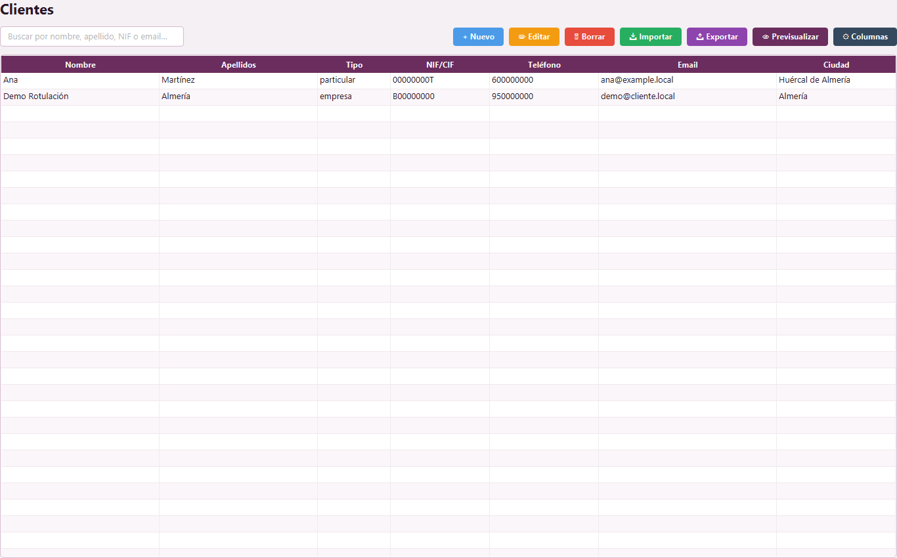
| Acceder | Menú lateral → Clientes → Clientes. |
| Crear | Nuevo → rellena nombre, tipo, NIF/CIF, teléfono, email, dirección, C.P., ciudad y notas → Guardar. |
| Editar | Buscar → seleccionar fila → Editar → cambiar datos → Guardar. |
| Borrar | Seleccionar → comprobar que no tenga historial → Borrar → confirmar. |
| Importar | Importar → elegir formato y archivo → revisar resumen → comprobar tabla. |
| Exportar | Exportar → elegir formato → guardar archivo. |
| Columnas | Columnas → Añadir, Renombrar, Ocultar o Mostrar. |
5. Presupuestos
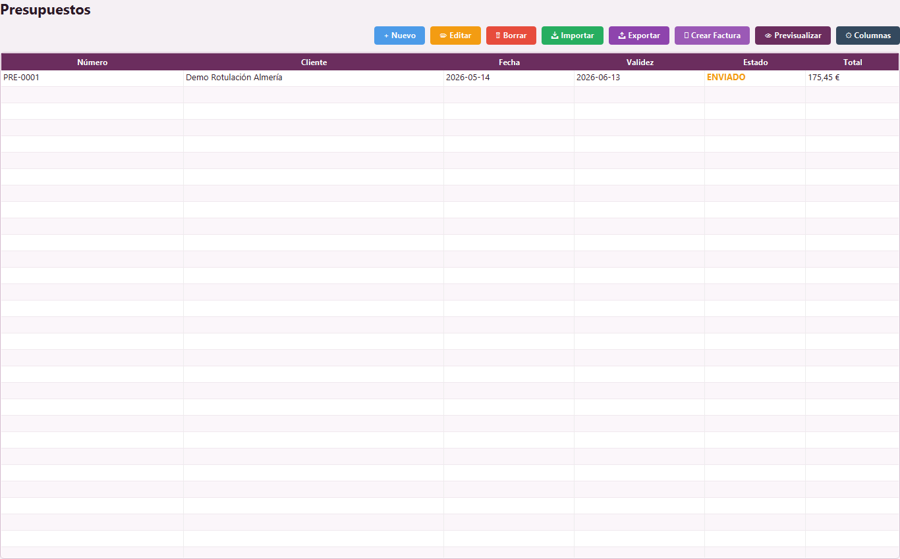
| Acceder | Comercial → Presupuestos. |
| Crear | Nuevo → Datos generales → Servicios / Técnicas → Materiales del stock si procede → revisar total → Guardar. |
| Añadir material | Materiales del stock → seleccionar material → indicar cantidad → Añadir al presupuesto. |
| Editar | Seleccionar presupuesto → Editar → modificar cabecera, líneas o materiales → revisar total → Guardar. |
| Anular | Cambiar estado o añadir observación si ya se entregó. Borrar solo si es prueba o duplicado. |
| Seleccionar → PDF/Vista previa → revisar cliente, líneas, IVA y total → Imprimir. | |
| Importar/exportar | Usa Importar o Exportar desde la barra del módulo y revisa siempre el resultado. |
6. Facturas
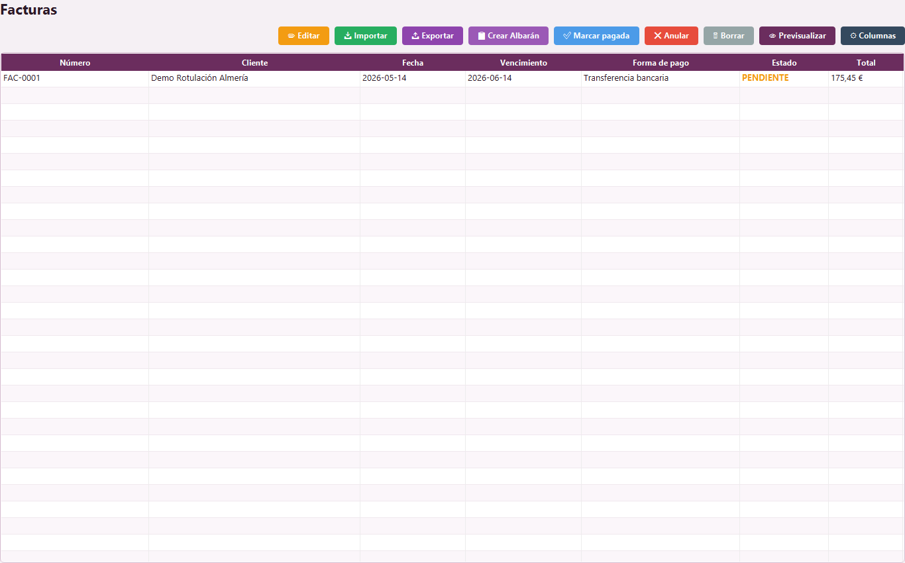
| Acceder | Comercial → Facturas. |
| Crear | Nueva factura → cliente, número, fecha, vencimiento → servicios/técnicas → materiales si procede → revisar impuestos → Guardar. |
| Añadir material | Materiales del stock → seleccionar → cantidad → Añadir a la factura. |
| Editar | Seleccionar → Editar factura → modificar → revisar total → Guardar. |
| Anular | Conservar trazabilidad si fue emitida; usa estado u observación antes de borrar. |
| Imprimir | PDF/Vista previa → revisar todos los datos fiscales → Imprimir. |
| Importar/exportar | Importar añade o actualiza; Exportar guarda listados o datos. |
7. Albaranes
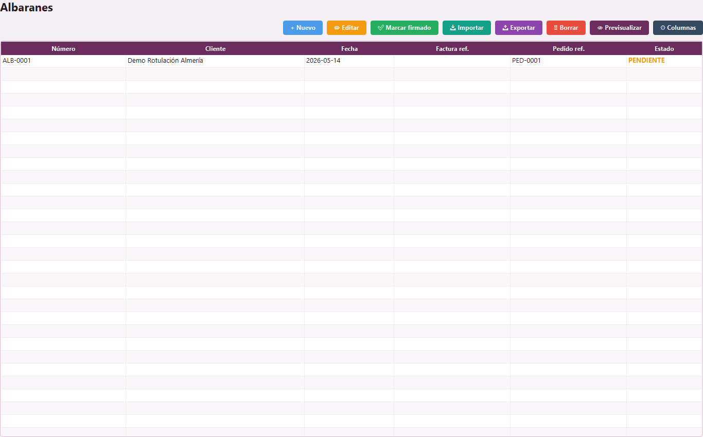
| Acceder | Comercial → Albaranes. |
| Crear | Nuevo → Datos generales → Artículos → Guardar. |
| Editar | Seleccionar → Editar → modificar datos o artículos → Guardar. |
| Seleccionar → PDF/Vista previa → revisar entrega → Imprimir. | |
| Importar/exportar | Importar albaranes o exportar listado según formato disponible. |
8. Pedidos y pagos
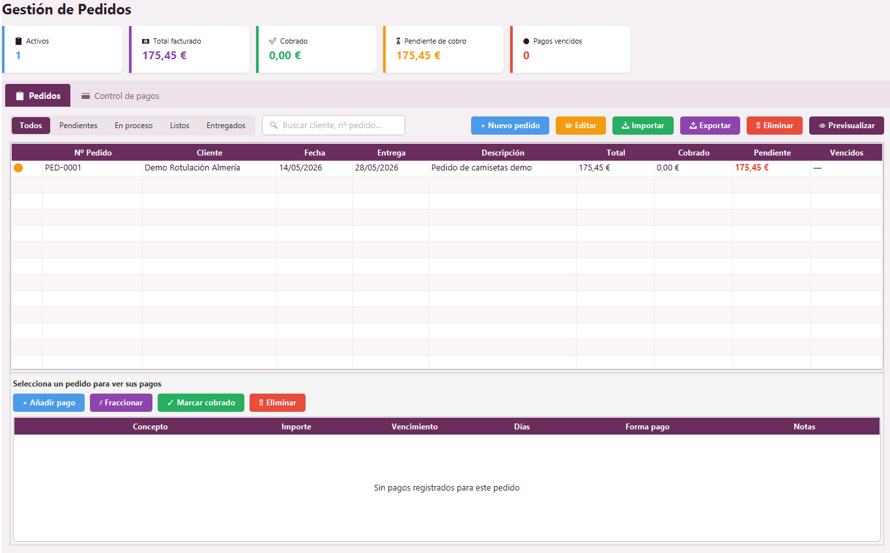
| Acceder | Comercial → Pedidos. |
| Crear pedido | Pestaña Pedidos → Nuevo → cliente, fecha, entrega, estado, total → Guardar. |
| Editar pedido | Buscar → seleccionar → Editar → cambiar estado, fecha o total → Guardar. |
| Añadir pago | Seleccionar pedido → Control de pagos → Añadir pago → importe, fecha, método → Guardar. |
| Fraccionar | Control de pagos → Fraccionar pago → definir vencimientos. |
| Confirmar cobro | Seleccionar pago → Confirmar cobro → indicar fecha recibida. |
| Anular | Cambiar estado o notas si el pedido existió; borrar solo pruebas. |
9. Tarifas y materiales
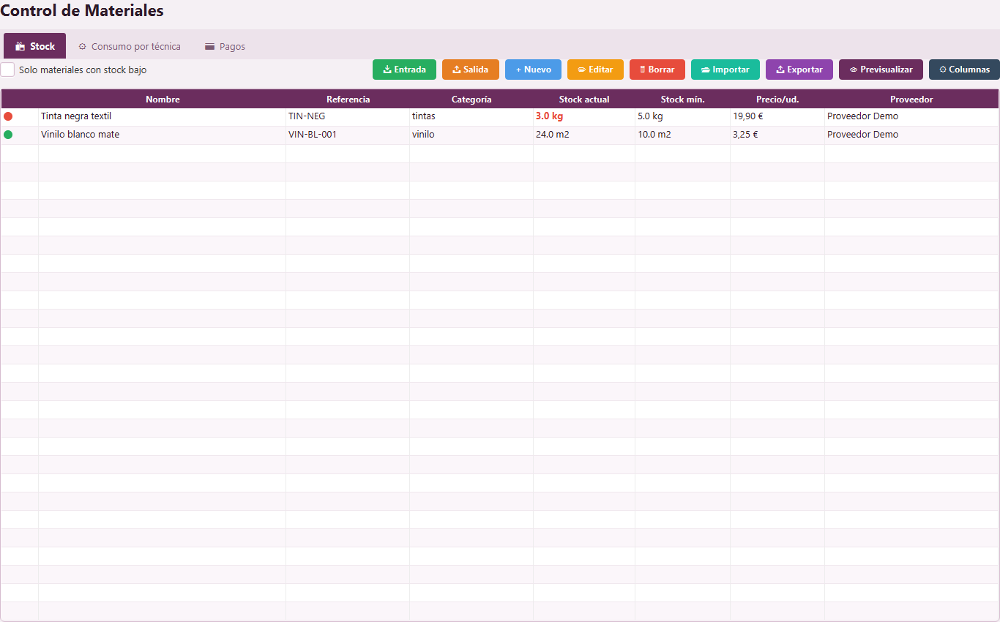
Tarifas
| Acceder | Almacén → Tarifas. |
| Crear | Nuevo → técnica, descripción, precio, unidad, categoría → Guardar. |
| Editar/borrar | Seleccionar → Editar o Borrar. No borres tarifas que necesites como referencia histórica. |
| Importar/exportar | Importar listados de precios o exportarlos para revisión. |
Materiales
| Acceder | Almacén → Materiales. |
| Stock | Nuevo → nombre, proveedor, unidad, precio, stock, mínimo → Guardar. |
| Stock bajo | Activa Solo materiales con stock bajo. |
| Pagos | Pestaña Pagos → añadir proveedor, importe y fecha. |
| Consumo por técnica | Selecciona técnica y material → define consumo por unidad → Guardar. |
| Importar/exportar | Importa inventario o exporta listado. |
10. Empleados y nóminas
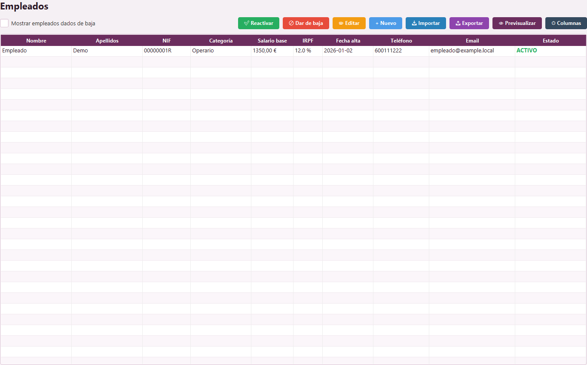
Empleados
| Acceder | Personal → Empleados. |
| Crear | Nuevo → datos personales, contacto, puesto, salario, activo → Guardar. |
| Editar | Seleccionar → Editar → cambiar datos → Guardar. |
| Baja | Desmarcar Activo o añadir observación. Usa Mostrar empleados dados de baja para verlos. |
Nóminas
| Acceder | Personal → Nóminas. |
| Crear individual | Nueva → año, mes, empleado, salario base, horas extra, complementos, IRPF → Guardar. |
| Generar el mes entero | ⚡ Generar mes para todos → seleccionar mes y año → Aceptar. Crea una nómina por cada empleado activo. Si ya existía esa nómina del mes, se omite. |
| Editar | Seleccionar → Editar → corregir importes → Guardar. |
| Seleccionar → PDF/Vista previa → revisar → Imprimir. |
Bruto = Salario base + Complementos + Horas extra + Percepciones no salariales.
SS Trabajador = 6,35 % de la base · IRPF = % de la ficha · SS Empresa = 29,90 % (no descuenta al trabajador).
Neto = Bruto − SS Trabajador − IRPF.
11. Estadísticas, calendario, IA y configuración
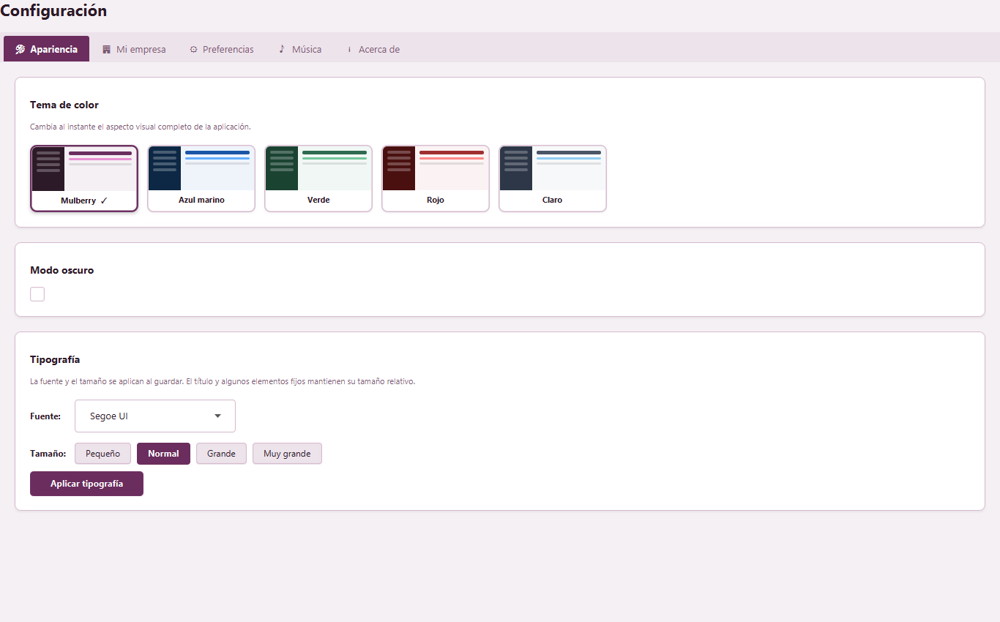
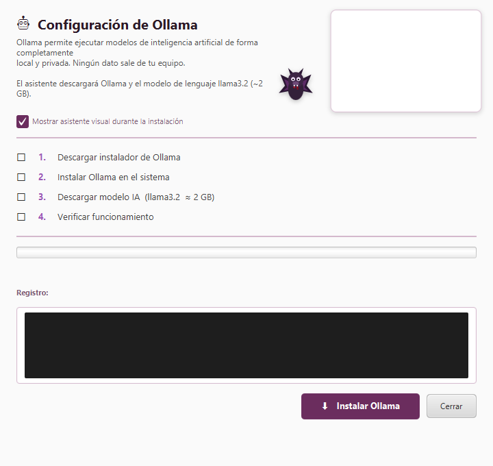
| Estadísticas | Analítica → Estadísticas → elegir año → revisar gráficos → Previsualizar → Exportar PDF. |
| Calendario | Analítica → Calendario → cambiar mes con flechas → seleccionar día → guardar nota → revisar recordatorios. |
| Asistente IA | Sistema → Asistente IA → instalar Ollama si falta → escribir consulta → marcar contexto ERP si procede. |
| Ollama/modelos | Instalar Ollama → observar registro → gestionar modelos → descargar o eliminar modelos. |
| Configuración | Sistema → Configuración → Apariencia, Mi empresa, Preferencias, Música y Acerca de → guardar cambios. |
| Asistente visual | Configuración asistente visual → mostrar, personaje (Vampi, David, Gema, Sonia, Ana), tamaño, voz, instalación Ollama/modelos y restablecer posición. |
| Música | Configuración → Música → Añadir MP3, quitar seleccionado, volumen, bucle, autoplay y guardar. |
Contexto ERP del Asistente IA
Marca Incluir contexto del ERP en el chat para que la IA vea tus presupuestos, facturas, top clientes, pedidos, stock y recordatorios al responder. Se cachea 8 minutos.
| Actívalo | «¿Qué clientes me deben más?», «Hazme un email de cobro», «Resume mi facturación del mes», «¿Qué materiales pido hoy?» |
| Déjalo desactivado | «Redacta un texto comercial», «Tradúceme esto», «Explícame DTF». Más rápido y consume menos memoria. |
Modelos IA recomendados
| llama3.2 (~2 GB · 8 GB RAM) | ★ Primer modelo. Equilibrado, ligero. |
| mistral (~4 GB · 8 GB RAM) | ★ Excelente español. Redacción comercial. |
| qwen3 (~5 GB · 10 GB RAM) | ★ Listados estructurados, análisis con datos. |
12. Copias, importación y PDF
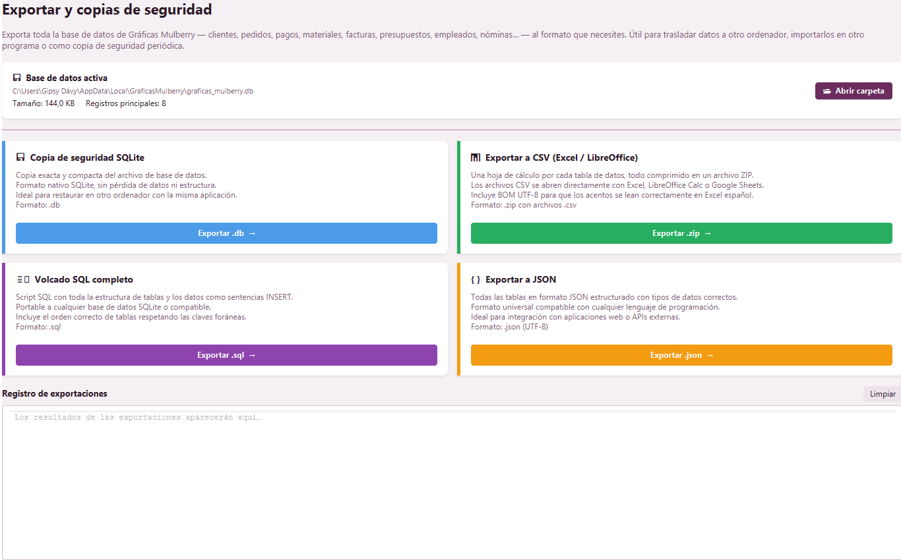
| Exportar / Backup | Sistema → Exportar / Backup → revisar base activa → Exportar → guardar → abrir carpeta si hace falta. |
| Importar Backup | Hacer copia actual → Importar Backup → seleccionar archivo → leer advertencia → confirmar → revisar datos. |
| Importación con IA | Seleccionar archivo → detectar tipo → revisar mapeo → vista previa → importar. |
| Columnas dinámicas | Columnas → Añadir, Renombrar, Ocultar o Mostrar. |
| Vista previa PDF | Anterior, Siguiente, Zoom +, Zoom - e Imprimir. |
13. Atajos y consejos exprés
| Doble clic fila | En cualquier tabla equivale a Editar. |
| Ctrl + clic | Selecciona varias filas a la vez. |
| Enter | (IA) Envía la consulta. Shift + Enter añade salto de línea. |
| Ctrl + A | Selecciona todas las filas de la tabla activa. |
| F11 | Maximizar / restaurar. |
| Alt + F4 | Cerrar la aplicación (pide confirmación). |
Reglas de oro
- Antes de cualquier importación o restauración: backup .db.
- El presupuesto se factura cuando está en aceptado. Cambia el estado antes.
- Las facturas no se borran: se anulan.
- «Generar mes para todos» en Nóminas: revisa antes salario base e IRPF en cada ficha.
- Pasa con frecuencia por Pedidos → Control de pagos para detectar vencidos.
- Activa contexto ERP en la IA solo cuando la pregunta dependa de tus datos.
14. Problemas frecuentes
| No encuentro un registro | Limpia filtros, revisa Buscar y confirma que estás en el módulo correcto. |
| No puedo editar/borrar | Selecciona primero la fila de la tabla. |
| No debo borrar | Usa estado, baja u observaciones si hay historial. Las facturas se anulan, no se borran. |
| Importación falla | Revisa formato, columnas y mapeo. Haz backup antes de repetir. |
| PDF con datos antiguos | Configuración → Mi empresa → actualiza y genera otra vez. |
| IA no responde | Instala Ollama, descarga al menos un modelo. Para equipos con poca RAM, usa llama3.2. |
| IA lenta | El modelo es demasiado pesado para tu RAM. Cambia a phi3.5 o llama3.2. |
| Stock raro | Revisa stock mínimo, facturas recientes y reglas de consumo por técnica. |
| Nóminas batch con cifras raras | Comprueba salario base e IRPF en Empleados antes de generar. |
| El asistente visual no aparece | Menú lateral → 🧭 Activar asistente, o Configuración asistente visual → Restablecer posición. |
| Sonidos UI molestan | Reduce el volumen de interfaz en Configuración. La música tiene volumen independiente. |
| Una pista de música falla | El MP3 se movió o renombró. Quítala y vuelve a añadirla. |
Email: gipsybuho@gmail.com · Tel: 950 30 61 64. Adjunta el contenido de Configuración → Acerca de.